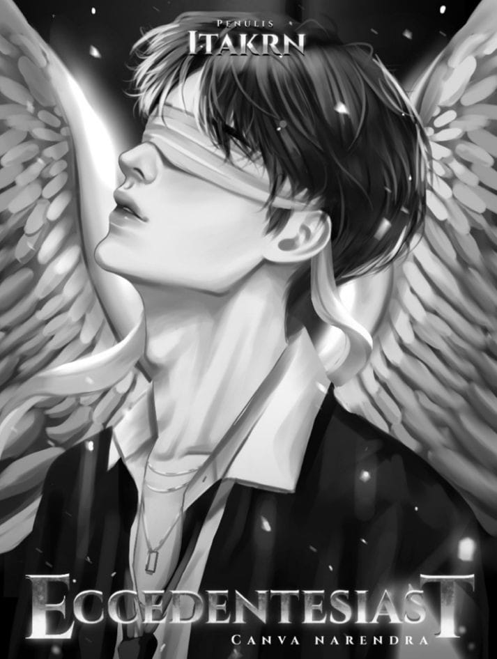

Canva Narendra adalah sosok lelaki tangguh dan penyabar. Cita-citanya hanya satu, yaitu hanya ingin bertemu kembali dengan kedua orang tua nya. Sejak itulah, Canva belajar mati-matian agar mendapatkan penghargaan agar diperhatikan oleh orangtuanya. Untuk mewujudkan mimpinya tersebut, Canva ditemani oleh sahabat-sahabat dekatnya di Geng Diamond, dan seorang gadis tunanetra yang Canva cintai bernama Aily.
Namun, dengan adanya kehadiran Zayyan yang merupakan musuh masa lalu Canva, membuat hari-hari Canva semakin kacau. Ambisi untuk menang dalam meraih penghargaan olimpiade pun semakin meningkat. Harapan untuk diperhatikan dan bertemu dengan orang tuanya, juga akan sama. Kehadiran seorang laki-laki bernama Venus, juga turut hadir untuk membuat masalah dalam hidup Canva semakin rumit.
Karena ambisinya yang begitu besar untuk mengalahkan Zayyan dalam olimpiade sampai sampai tidak menghiraukan kesehatanya, Canva divonis mengidap penyakit gagal ginjal kronis. Karena ambisinya pula dia harus rela dikeluarkan dari lingkaran persahabatan yang sudah Canva anggap sebagai keluarga itu. Dengan kondisi tubuh dan mentalnya yang kian memburuk, Canva tetap berjuang agar bisa mendapatkan penghargaan mengalahkan Zayyan dan mengalahkan Venus sang kakak kelas pembully. Canva juga berharap masuk dalam jajaran siswa berprestasi seperti temannya, Areksa. Juga dengan perjuangan cintanya dengan Aily.
| Poster | Judul | Pengarang | Peberbit | Tanggal terbit |
|---|---|---|---|---|
|  | ECCEDENTESIAT | Ita krn | Akad | 26 Apr 2022 |